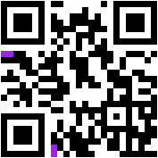
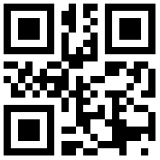
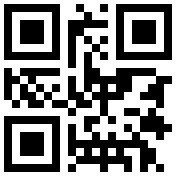
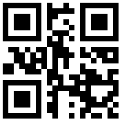
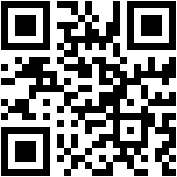

Fehlerkorrekur in QR-Codes
In QR-Codes wird Fehlerkorrekur verwendet, um sie gegen Verschmutzungen oder andere kleinere Beschädigungen widerständig zu machen.Auch wird es dadurch möglich Logos oder ähliches im QR-Code zu platzieren, da beim Scannen die dadurch fehlenden Daten ersetzt werden können.
Zur Fehlerkorrekur wird der Reed-Solomon Code verwendet. Sie entstandenen Fehlerkorrekurdaten werden nach dem Ende der gespeicherten nutzdaten im Datenbereich des QR-Codes gespeichert. im
QR-Code zur Schulwebsite, in dem sich das Schullogo befindet
Fehlerkorrekur-Levels
Im QR-Code Standart gibt es verschiedene Fehlerkorrekur-Level, was bedeutet, dass verschieden viele Paritätsdaten, verwendet und somit auch verschieden viele Fehler korrigiert werden können.
An den lila markierten Positionen wird gespeichet, welches Fehlerkorrekur-Level verwendet wird, als Pixelpaar codiert. Diese Paar wird doppelt (links, unten) gespeichert, um es gegen Beschädigungen resistanter zu machen. Das Paar wird von links nach rechts bzw. von unten nach obn gelesen
| Fehlerkorrekur-Level | Wiederherstellungsrate | Pixelpaar |
|---|---|---|
| L (Low) | 7% | schwarz; schwarz |
| M (Medium) | 15% | schwarz; weiß |
| Q (Quartile) | 25% | weiß; schwarz |
| H (High) | 30% | weiß; weiß |




QR-Codes, die dem Text "Example", mit den Korrekturleveln L, M, Q, H
Bei diesen Beispiel QR-Codes kann man die verschiedenen Kombinationen der Pixelpaare, welche das Fehlerkorrekur-Level angeben sehen. Auch fällt auf, dass der Code mit Level H größer (die einzelnen Pixel werden kleiner) als die Anderen ist. Dies liegt daran, dass hier so viele Paritätsdaten an die Nachricht angehängt wurden, dass sie nicht mehr in einen 21x21 QR-Code passen, sondern ein 23x23 QR-Code benötigt wird.
Reed-Solomon Code
Der Reed-Solomon Code ist ein fehlerkorigirender Code, der mittels der Polynominterpolation über die Daten funktioniert.Er nutzt es aus, dass für n Datenpunkte es genau eine Polynomfunktion n-1ten Grades gibt, die all diese schneidet. Von dieser Funktion werden eine beliebige Anzahl (k) weiterer Datenwerte abgelesen und als Paritätsdaten verwendet. Sind nun Datenpunkte verloren gegangen können sie wiederhergestellt werden, solange noch mindestens n der n + k Datenpunkte vorhanden sind. Dann auf diesen n Datenpunkten kann erneut die Polynomfunktion interpoliert werden. Aus dieser Funktion können dann die verloren gegangen Daten wieder abglesen werden. Es dürfen somit höchstens k Datenpunkte verloren gehen, was aber auch bedeutet, dass, wenn man mehr zusätzliche Punkte wählt, mehr Fehler korrigiert werden können. Hierdurch kommen die verschiedenen Fehlerkorrekur-Levels zustande, denn es werden je nach Level größere oder kleinere Werte für k verwendet.
Für gewöhnlich werden für die Positionen der Polynomfunktion, an der sich die Datenwerte befinden ganze Zahnlen (0; 1; 2; ...) verwendet.
~ Tobias